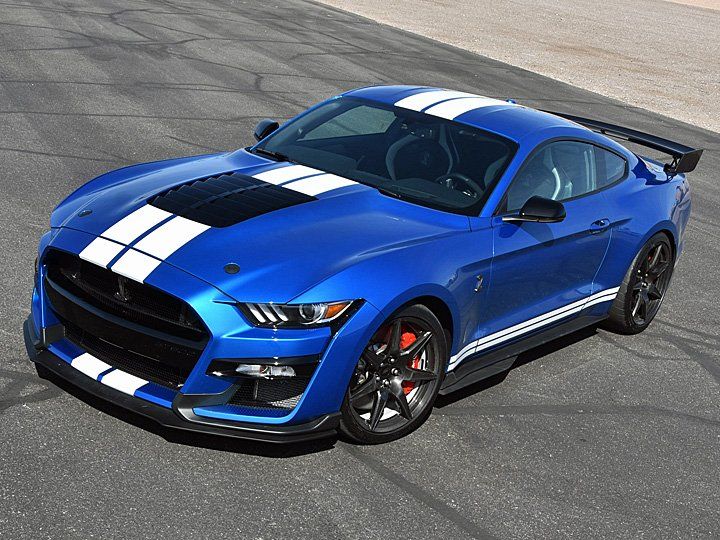
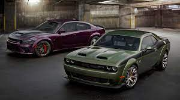
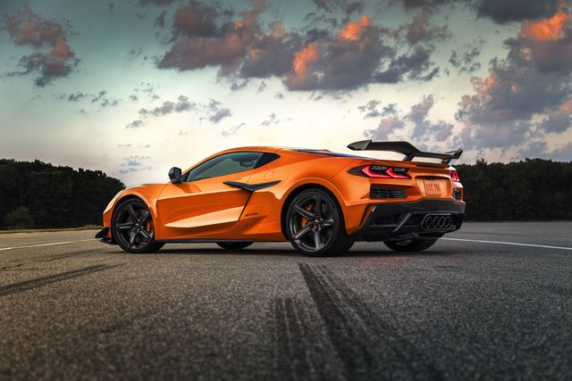
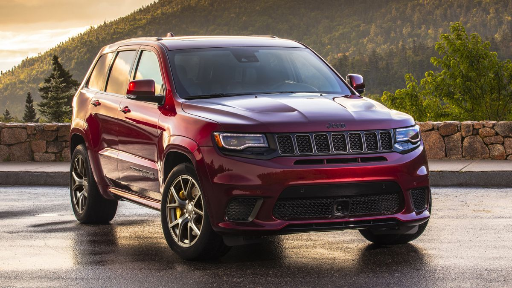
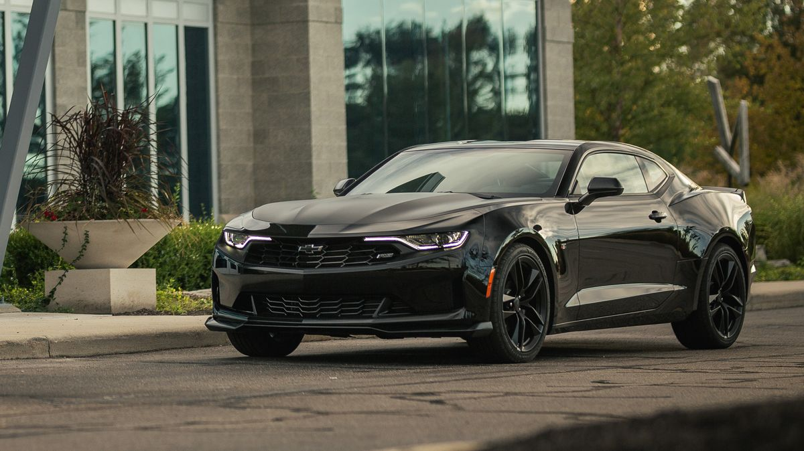

AMERICAN V8 CARS ONE COULD BUY IN 2022
V8 engines are one of thier own kind is the terms of sound and the amount of power they produce.
Many people around the world buy cars by looking at the brand and the type of engine the car have.
V8 engines produces an rumble sound that is loved from the people around the world.
Despite of the price people tend to go for the different brands they are fond of.
The debate is not new, it is continued since late 50's and early 60's, as people tend to prove each other which car engine is stronger.
In early times cars barely pushed an enormous amount of power and if it was able to push greater power, it become unreliable.
But now-a-days cars have become more powerfull as well as reliable also. Today many V8 engine cars comes with pre loaded power.
There is the list of the cars that are been delivered new from the showroom with thier price list and specifciations :
1. FORD MUSTANG GT

The most popular car around the world loved by many people are the Mustangs, Especially the rumbly and cracky exhaust sound.
Mustang has many variants and options starting from budget friendly less power to premium high power.
Mustang has an enviorment friendly engine based mustang Mustang Ecoboost for the people who only loves the looks and isnt concerned of what is under the hood.
The Ecoboost mustang comes with an engine with options of either v4 or v6.
Mustang GT is the V8 variant car for those people to whom the engine noise matters as well as the looks.
It comes with an around power of 460 bhp with 420 foot-pouund of torque.
Then comes the other premium and special packages based Mustangs, These are equipped with some addons to increase the power of the vehicle and enhance the looks of the vehicle.
Then the final is the recently launched Mustang with an aggresive looking front end and added spolier at the trunk.
Its named as GT 500 as it comes with an power of 760 bhp as it is equipped with an supercharger from the factory.
For more details - click here
2. DODGE CHALLENGER/CHARGER

The next most popular and aggressive looking car is the Dodge Hemi 6.2 litre V8 engine based Charger and Challenger.
Dodge is an only brand which equipped an V8 engine with supercharger into all of its top the line sports cars.
Both the Dodge Charger and the Dodge Challenger have a lot to offer if you're looking for a powerful and sporty vehicle.
Perhaps the biggest difference between the two is simply the number of doors.
While the Dodge Charger is a four-door sedan that seats up to five, the Challenger fits the same number of people in a two-door coupe.
For starters, the base engine on the 2022 Dodge Challenger is a V6 305-horsepower option.
However, you can easily upgrade this to a Hemi 48 engine that produces 375 horsepower or a 6.4-liter V8 engine that produces a whopping 485 horsepower.
The top model is Hellcat Redeye, it is slapped with an supercharger from the factory producing an power of 717 bhp.
For more details - click here
3. CHEVROLET C8 CORVETTE

The Corvette C8 Z06 is powered by the naturally-aspirated 5.5L V8 LT6 engine, and as reported by GM Authority, the high-revving engine has an official output rating of 670 horsepower and 470 pound-feet of torque.
Notably, the motor features a Dual OverHead Cam (DOHC) configuration with 32 valves and a flat-plane crankshaft that enables it to quickly rev to a sky-high 8,600 rpm redline.
Other highlights include an all-aluminum cylinder block, forged aluminum pistons, forged titanium connecting rods, an active split intake manifold with twin 87 mm throttle bodies and a racing-inspired dry-sump oiling system.
The captivating exhaust note can be heard full-blast in the feature film that unveiled the new high-performance super coupe.
Basically an american v8 muscle car that is mid engined, sounds very different?- Right, the c8 corvette is an american muscle car with an mid engine v8.
The base c8 comes with an simple v8 engine wit 460 horsepower and an 0-100 kmph in 2.9 seconds.
For more details - click here
4. JEEP GRAND CHEROKEE

The 2021 Jeep Grand Cherokee Trackhawk is an expletive-inducing thrill ride that would have gotten Clark Griswold and family to Wally World a lot sooner while still doubling Sparky's swears.
With a 707-hp supercharged Hellcat V-8 under the hood, it's not only the most powerful Jeep ever built, it's one of the most powerful SUVs in the world.
While the Trackhawk can't keep up with most sports cars at the racetrack, it can outrun some of the best of them in a straight line.
Now, it does cost roughly three times as much as a base Grand Cherokee Laredo but its prodigious performance makes its almost $90K price tag look like it's from the clearance section compared with the Porsche Cayenne Turbo and Mercedes-AMG GLE63 S.
Despite its extroverted exterior and roaring exhaust note, the 2021 Grand Cherokee Trackhawk isn't all fire and brimstone.
If fact, it has a leather-covered cabin, all the latest technology, useful cargo space, and the ability to tow 7200 pounds.
Who could imagine an suv with that amount of power. Person with children could easily use it for his daily and with an switch of button drag race it.
Its an true from of SUV with fun.
For more details - click here
5. CHEVROLET CAMARO ZL1

The 2022 Chevrolet Camaro coupe and convertible are about the pure and simple joy of driving.
Forget about their compromised outward visibility and cramped rear seats. Instead, embrace their lithe handling, satisfying stick-shift transmission, and remarkably smooth ride.
A 275-hp turbo four is the default engine, but opting for the 335-hp V-6 or the 455-hp V-8 unlocks more melodic soundtracks and punchier acceleration.
Its cabin includes some unattractive materials, and some will call it claustrophobic, but its front seats are comfy and supportive, and its well-stocked infotainment system is easy to use.
The Ford Mustang and Dodge Challenger are better as daily drivers, but with the optional 1LE package, Chevy's pony car transforms into the best track car of the three.
When it comes to performance for the price, it's hard to find a better value than the 2022 Camaro.
The Camaro's supercharged 6.2-liter V-8 is a well-behaved and tractable beast that makes power all over the rev range and leaves black streaks all over the road.
As you'd expect, when stirred up, it leaves the sound of thunder echoing in its wake. Whether paired with the standard six-speed manual transmission or the available 10-speed automatic, the supercharged small-block V-8 lays down stupidly incredible performance figures.
The fast-shifting automatic results in quicker acceleration times than the stick, but either way, this Chevy is a demon at the drag strip.
For more details - click here